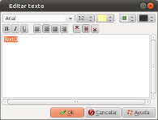

Introducción
La ventana "Editar texto" permite editar el texto en un bloque:

Esta ventana se llama desde la ventana de diálogo
Propiedades de diapositiva, haciendo click en el botón
Descripción de la ventana
Primera zona, arriba
| Fuente | Permite seleccionar la fuente que se va a utilizar | ||||||
| Color | Permite seleccionar el color que se va a utilizar | ||||||
| Tamaño | Permite seleccionar el tamaño del carácter que se va a utilizar | ||||||
| Sombra (efecto) | Permite seleccionar un
contorno o sombra al texto:
|
||||||
| Sombra (color) | Permite seleccionar el color de la sombra o del contorno. |
Segunda zona
 |
Conjuntos de caracteres en negrita |
 |
Conjuntos de caracteres en cursiva |
 |
Subrayar los caracteres |
 |
Alineación horizontal: a la izquierda |
 |
Alineación horizontal: centrado |
 |
Alineación horizontal: justificado |
 |
Alineación horizontal: a la derecha |
 |
Alineación vertical: arriba |
 |
Alineación vertical: en el medio |
 |
Alineación vertical: abajo |
Tercera zona
Campo de entrada para el texto
Consulta también
© Proyecto ffDiaporama